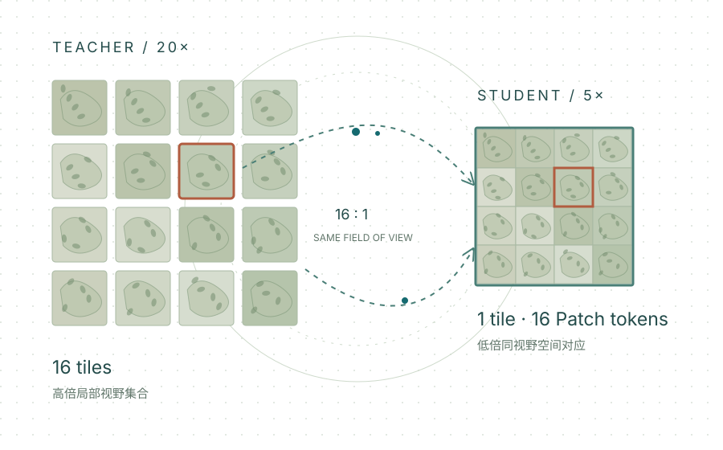

01 / RESEARCH OVERVIEW从数据扩充到可归因的性能验证
BRIGHT-FLASH · CROSS-MAGNIFICATION DISTILLATION
让高倍视野的知识，
走进低倍表征。
扩充五个队列，以冻结的 20× H-optimus-1 教师指导 5× BRIGHT-Flash-ex，延续跨倍率交叉蒸馏范式，再以受控实验检验表征、选区与最终任务表现。
SPATIAL KNOWLEDGE TRANSFER方法示意

20× 高倍局部结构知识迁移 →5× 低倍完整视野概念图，无真实病理影像；学生内部 16 Patch 对应教师 16 tile；纹理仅为概念示意。
02 / DATA EXPANSION数据来源：用户提供的五队列计数
FIVE COHORTS, ONE EXPANDED TRAINING POOL
18,756 例，构成与覆盖。
扩充增加了可用病例覆盖；是否改善跨队列表征，
仍需通过独立测试集验证。
线性比例 · 零基线 · 选择队列查看精确数值
05,00010,00015,000 例
!规模不均衡是需要控制的因素。 最大队列占 79.27%，最小队列占 1.02%；训练采样策略需记录，测试结果需按队列分别报告。此处“例”沿用提供口径，去重、配对可用数与患者划分尚待确认。
查看完整数据表与口径
占比 = 队列例数 ÷ 18,756 × 100%，显示两位小数。| 队列 | 例数 | 占比 |
|---|
当前未提供扩充前病例数，故不计算增长率。五队列总和不代表已完成患者去重，也不代表全部纳入训练。
03 / CROSS-MAGNIFICATION DISTILLATION教师冻结 · 学生更新 · 同一物理视野
SAME FIELD OF VIEW · SHARED KNOWLEDGE
跨倍率对应，交叉对齐。
主对齐已确认 · 交叉配对与聚合算子待核对
同一物理视野20× / 5× = 4 倍线性倍率比
已选区域 01 · 教师与学生的空间位置对应
4×4 覆盖示意基于相同像素边长、物理采样尺度匹配；真实配准以坐标和 MPP 为准。
FROZEN · STOP GRADIENTH-optimus-1 20× 教师16 CLS → 聚合为 1 CLS；16 tile → 对应 Patch 目标
TRAINABLEBRIGHT-Flash-ex 5× 学生1 CLS / 16 Patch → 各自学生投影 PCLS / PPatch
两条主对齐已确认；带 * 的交叉配对待与原实现核对。再次点击可取消高亮。
COSINE ALIGNMENT · SYMBOLIC ONLYℒ = Σ λab [1 − cos(Pa(Sa), sg(Ab(Tb)))]a,b ∈ {CLS, Patch}。A 表示目标聚合 / 映射；学生为 1 CLS + 16 Patch，聚合算子与损失权重待核对。
保持原范式同视野跨倍率输入CLS / Patch 双学生投影四路余弦对齐仅更新学生及其投影
04 / CONTROLLED EXPERIMENTS先评测表征，再训练选区，最后交叉组合
A TWO-BY-TWO CONTROLLED PIPELINE DESIGN
把提升来自哪里，分开验证。
固定比较条件，逐层检验假设。
所有“提升”均为待验证的研究问题。
01独立评测 5× 表征
BRIGHT-Flash-1007 / BRIGHT-Flash-ex
目的：检验扩充蒸馏后的低倍表征表现。 →02分别训练 SNGP
SNGP-1007 / SNGP-ex
目的：检验对应特征下的选区与不确定性。 →03统一 Top-N 后接 20× 编码器
BRIGHT-S / H-optimus-1
目的：比较选区分支与高倍编码器的影响。 P1–P4 · 二因素组合
共享 Top-N 协议5× / SNGP ↓
20× 编码器 →
BRIGHT-S
H-optimus-1
1007SNGP-1007
exSNGP-ex
四组同步；这里只演示设计，不运行模型。
P3 vs P1 / P4 vs P2固定 20× 编码器，比较 5× 表征 + 对应 SNGP 的联合效应。
P2 vs P1 / P4 vs P3固定选区结果，比较 20× 编码器效应。
差中之差（预设分析）(P4 − P3) − (P2 − P1)，检查两因素交互；统计方案需预注册。
05 / EVIDENCE & NEXT STEPS实验设计状态 · 尚未导入量化结果
MEASURE FIRST. CLAIM LATER.
让每一个结论，都有对应证据。
量化结果占位 · “待测”不是 0，也不代表性能排序。| 评测层级 / 组别 | AUROC / 95% CI | 补充指标 | 状态 |
|---|
| 5× · 1007 / ex | — / — | AUPRC、任务指标 | 待测 |
|---|
| SNGP-1007 / ex | — / — | ECE、Brier、AURC | 待测 |
|---|
| P1 · 1007 + BRIGHT-S | — / — | 任务指标、时延 | 待测 |
|---|
| P2 · 1007 + H-optimus-1 | — / — | 任务指标、时延 | 待测 |
|---|
| P3 · ex + BRIGHT-S | — / — | 任务指标、时延 | 待测 |
|---|
| P4 · ex + H-optimus-1 | — / — | 任务指标、时延 | 待测 |
|---|
指标为候选清单，需按最终任务预注册。SNGP 的选区质量需另有 ROI / 病灶参考标准；无标注时不能宣称选区准确率。
归因边界1007 与 ex 同时涉及数据扩充及教师替换，仅凭当前设计不能拆分两者的独立贡献。若需归因，应增加“原数据 / 扩充数据 × BRIGHT-S / H-optimus-1 蒸馏教师”的消融；本页 P1–P4 的二因素是选区分支与下游编码器。